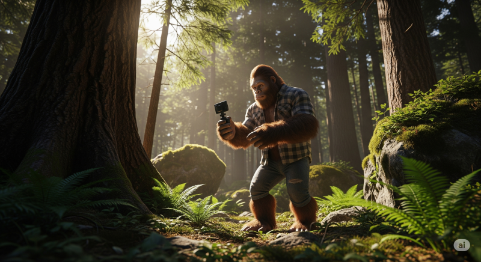

최근 유튜브와 틱톡을 휩쓸고 있는 '빅풋(Bigfoot) 브이로그', 혹시 보신 적 있으신가요? 전설 속 생명체인 빅풋이나 예티가 요가를 하거나 마시멜로를 구워 먹는 등 엉뚱하고 유쾌한 일상을 담은 이 영상들이 엄청난 조회수와 구독자를 끌어모으고 있습니다.
이런 영상을 보며 '나도 한번 만들어보고 싶다'고 생각했지만, 복잡한 영상 편집 기술이나 기발한 스토리가 막막해 망설이셨나요? 더 이상 걱정하지 마세요!
이 글을 끝까지 읽으시면, 여러분은 ChatGPT와 Google의 Veo 3 같은 최신 AI 도구를 활용해, 단 몇 분 만에 누구나 쉽게 바이럴 영상을 만드는 전 과정을 완벽하게 마스터하게 될 것입니다. 코딩이나 전문 지식은 전혀 필요 없습니다!
이 글의 목차
빅풋 브이로그란 무엇이고 왜 열풍일까?
빅풋 브이로그는 AI를 이용해 만든 가상의 영상 콘텐츠입니다. 신비로운 존재인 '빅풋'이 마치 평범한 유튜버처럼 자신의 일상을 셀카(셀피) 형식으로 촬영하는 컨셉이죠. 이러한 영상들은 기존에 없던 신선함과 유머 코드로 빠르게 입소문을 타고 있습니다.
왜 이렇게 인기가 많을까?
인기의 핵심 비결은 바로 'AI 기술'에 있습니다. 과거에는 상상도 못 할 퀄리티의 영상을 누구나 쉽게, 그리고 아주 빠르게 만들 수 있게 되었기 때문입니다.
- 신선함과 유머: '전설의 빅풋이 요가를?'이라는 엉뚱한 설정 자체가 시청자의 호기심을 자극하고 웃음을 유발합니다.
- 빠른 콘텐츠 생산: AI를 사용하면 아이디어 구상부터 영상 제작까지의 시간을 획기적으로 단축할 수 있어, 트렌드에 맞춰 빠르게 콘텐츠를 공급할 수 있습니다.
- 낮은 진입 장벽: 고가의 촬영 장비나 전문적인 영상 편집 기술 없이도 아이디어와 AI 도구만 있으면 누구나 크리에이터가 될 수 있습니다.
💡 핵심 포인트: 이 트렌드의 핵심은 'AI를 활용한 콘텐츠 자동화'입니다. 복잡한 기술 없이도 창의적인 아이디어를 빠르게 영상으로 구현할 수 있다는 점이 가장 큰 매력입니다.
AI 영상 제작 3단계 완벽 가이드
이제 본격적으로 AI를 이용해 빅풋 브이로그를 만드는 방법을 단계별로 알아보겠습니다. 전체 과정은 크게 [대본 생성 → 프롬프트 작성 → 영상 생성] 3단계로 나뉩니다.
-
1단계: ChatGPT로 바이럴 영상 대본 만들기
좋은 영상은 좋은 스토리에서 시작됩니다. 먼저, 참고할 만한 바이럴 영상의 유튜브 링크를 복사하세요. 그리고 ChatGPT에 아래와 같은 프롬프트를 입력하여 영상 구조를 분석시킵니다.
Help me analyze this video and break down its structure in storyboards. [여기에 영상 링크 붙여넣기]
ChatGPT가 영상의 구조를 파악했다면, 이제 우리의 새로운 스토리를 만들 차례입니다. 아래 프롬프트를 이어서 입력하세요.
I want to create a similar Bigfoot vlog video. Please generate me three brand new video scripts. 8 seconds per storyboard, total 6 to eight storyboards.
(여기서 8초가 중요한 이유는, Google Veo 3가 한 번에 8초 길이의 영상을 생성하기 때문입니다!) -
2단계: Veo 3 영상 프롬프터로 변환하기
대본이 준비되었다면, 이제 AI가 이해할 수 있는 '영상 제작 명령어(프롬프트)'로 바꿔야 합니다. ChatGPT에게 다음과 같이 요청하세요.
Generate Google Veo 3 video prompt for each storyboard.
여기에 영상 속 빅풋의 목소리를 추가하기 위해 한 번 더 명령합니다.
Add voice over for each storyboard, format like: he says "..."
이제 각 장면(storyboard)에 대한 상세한 영상 묘사와 대사가 포함된 완벽한 프롬프트가 완성되었습니다. -
3단계: Flow AI로 영상 생성 및 편집하기
이제 완성된 프롬프트를 가지고 Flow AI와 같은 비디오 생성 플랫폼으로 이동합니다. 생성된 프롬프트를 하나씩 붙여넣고 영상을 생성하면 됩니다. 각 장면이 만들어지면, CapCut과 같은 편집 툴로 이어 붙이거나 Flow AI의 'Add to Scene' 기능을 사용해 하나의 영상으로 합칠 수 있습니다.
"가장 중요한 것은 일단 시작하고, AI의 결과물을 보며 조금씩 수정해 나가는 것입니다. 완벽한 프롬프트는 여러 번의 시도 속에서 탄생합니다."
– Monetize with AI
실제 제작 사례: ChatGPT vs Gemini 스크립트 비교
동일한 컨셉을 두고 ChatGPT와 Gemini, 두 AI가 만든 스크립트는 어떤 차이가 있을까요? 실제 제작된 영상을 통해 각 AI의 특징을 분석해 보겠습니다.
사례 1: ChatGPT 스크립트 - "빅풋, 마시멜로를 요리하다"
- 상황(Before): '빅풋이 숲속에서 마시멜로를 구워 먹는다'는 유머러스한 컨셉의 스크립트가 필요했습니다.
- 적용 과정(Action): ChatGPT를 이용해 코믹한 대사와 상황이 포함된 6개의 스토리보드와 영상 프롬프트를 생성했습니다.
- 결과(After): 대사가 풍부하고 상황이 역동적인, 한 편의 시트콤 같은 영상이 만들어졌습니다. "이 황금빛 아름다움을 봐!", "공식적으로 숲에 불을 붙이고 있네" 와 같은 재치 있는 대사가 특징입니다.
사례 2: Gemini 스크립트 - "빅풋, 새로운 장소를 탐험하다"
- 상황(Before): 동일한 빅풋 브이로그 컨셉이지만, 좀 더 신비롭고 진지한 분위기의 스크립트를 원했습니다.
- 실수/과정(Action): Gemini를 이용해 스크립트를 생성했습니다. Gemini는 ChatGPT보다 간결하고 분위기를 묘사하는 데 집중하는 경향을 보였습니다.
- 교훈/결과(Lesson): "새로운 장소. 좋은 나무들. 조용하다.", "이상한 소리. 짐승이 아니야. 바람도 아니야." 와 같이 짧고 함축적인 대사로 구성되어, 신비롭고 긴장감 있는 분위기를 자아내는 영상이 완성되었습니다. 이를 통해 어떤 분위기의 영상을 만들고 싶은지에 따라 적합한 AI 툴이 다를 수 있다는 교훈을 얻었습니다.
⚠️ 이것만은 피하세요: 처음부터 완벽한 영상을 만들려고 하지 마세요. AI는 때로 엉뚱한 결과물을 내놓습니다. 여러 번 생성해보고, 그중 가장 좋은 클립들을 조합하는 것이 시간과 비용을 아끼는 지름길입니다.
AI 영상의 핵심! 캐릭터 일관성 유지하는 비법
여러 개의 영상 클립을 따로 생성하다 보면 빅풋의 모습이 조금씩 달라지는 문제가 발생합니다. 이 문제를 해결하고 캐릭터의 외형을 일관되게 유지하는 Flow AI의 숨겨진 꿀팁을 알려드립니다.
- 기준 클립 선택 및 타임라인 추가: 가장 마음에 드는 빅풋이 나온 영상 클립을 하나 골라 'Add to Scene'을 눌러 타임라인에 추가합니다.
- 프레임 에셋으로 저장: 타임라인의 클립에서 (+) 아이콘을 누르고 'Save frame as asset'을 선택합니다. 이렇게 하면 해당 영상의 특정 장면이 이미지로 저장됩니다.
- 'Frame to Video' 모드로 생성: 이제 다음 장면을 생성할 때, 텍스트 프롬프트와 함께 방금 저장한 이미지를 참조하도록 설정합니다. AI가 이 이미지를 기준으로 다음 영상을 만들기 때문에 캐릭터의 생김새, 털 색깔 등이 일관되게 유지됩니다.
참고: 이 기능(V2)은 캐릭터 일관성은 뛰어나지만 음성 생성을 지원하지 않을 수 있습니다. 하지만 테스트용 영상을 저렴한 비용(10 크레딧)으로 만들기에 매우 유용합니다.
자주 묻는 질문 (FAQ)
독자들이 가질 만한 추가적인 질문에 대해 미리 답변하여 궁금증을 해소해 드립니다.
Q1. AI 영상 제작, 비용이 많이 드나요?
A. 아닙니다. Flow AI의 'V3 fast' 모드나 'V2' 모드를 활용하면 크레딧을 절약하며 저비용으로 제작할 수 있습니다. Gemini Pro는 학생에게 무료로 제공되기도 하니, 초기에는 부담 없이 테스트하며 감을 익히는 것을 추천합니다.
Q2. 영상에 사용된 목소리는 어떻게 만드나요?
A. Flow AI의 V3 모드는 텍스트를 음성으로 변환하는 기능(TTS)을 내장하고 있습니다. 프롬프트에 `he says "대사 내용"` 형식으로 입력하면 AI가 자동으로 목소리를 생성해줍니다. 더 다양한 목소리가 필요하다면 ElevenLabs 같은 별도의 AI 음성 서비스를 활용할 수도 있습니다.
Q3. 생성할 때마다 캐릭터 모습이 바뀌는데 어떻게 하죠?
A. 이 글의 캐릭터 일관성 유지하는 비법 섹션에서 설명한 Flow AI의 'Save frame as asset' 기능을 활용해보세요. 기준이 되는 이미지를 바탕으로 다음 영상을 생성하면 캐릭터의 외형을 놀랍도록 일관되게 유지할 수 있습니다.
결론: 지금 바로 당신의 AI 크리에이터 여정을 시작하세요!
결론적으로, 우리는 바이럴 '빅풋 브이로그'의 인기 비결을 파악하고, ChatGPT로 스토리를 구상한 뒤, Flow AI와 Veo 3를 이용해 단 3단계만으로 멋진 영상을 제작하는 구체적인 방법을 배웠습니다. 또한, 캐릭터 일관성을 유지하는 전문가 수준의 팁까지 확인했습니다.
더 이상 전문 기술이나 고가의 장비가 없다고 망설일 필요가 없습니다. 여러분의 머릿속에 있는 재미있고 기발한 아이디어를 AI라는 강력한 도구를 통해 지금 바로 현실로 만들어보세요.
오늘 배운 내용을 바탕으로 지금 바로 여러분만의 'AI 브이로그'를 만들어보는 것은 어떨까요? 제작 과정에서 궁금한 점이나 여러분이 만든 멋진 영상이 있다면 아래 댓글로 자유롭게 공유해주세요!